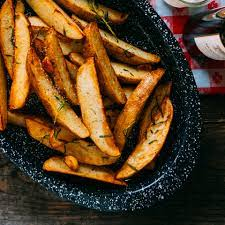

Fried Patatoes

Description
This recipe will help you make crispy tender patatoe chips at your own home!
You will need:
- Patatoes
- Butter
- Seasoning
- Water
Now for the instructions:
- Peel the patatoes
- Let them rest in water to remove the starch for 30 minutes
- Cut them into shapes of your choosing(I suggest apple slices)
- Season your patatoes
- Add butter to a pan
- Fry patatoes until crispy
- Bon Apetit!
Return to the homepage for more recipes!
HomePage